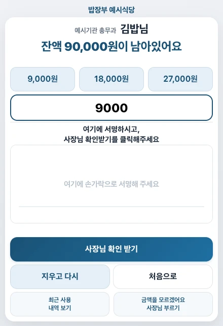
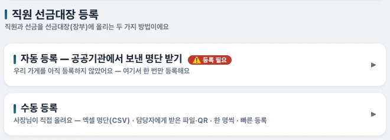
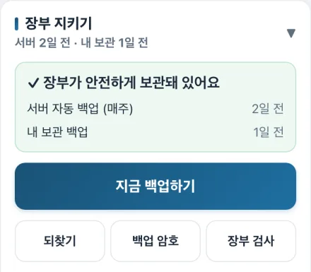

음식점 사장님 안내
가게 장부 쓰기
손님이 금액과 서명을 입력하면,
사장님이 확인하고 저장해요.
매일은 이 순서로 쓰세요
손님 화면으로 바꿔요
사장님 홈에서 [손님 셀프 조회]를 눌러 태블릿을 건네주세요.
손님이 입력해요
이름·소속 확인 → 금액 입력 → 서명 → [사장님 확인 받기].
비밀번호를 넣고 저장해요
사장님이 앱 비밀번호를 입력해요. 이름·금액·서명이 맞으면 [저장]을 눌러요.
손님 화면으로 돌려놔요
저장하면 잔액증표가 떠요. 손님과 잔액을 확인하고 [닫고 손님 화면으로]를 누르면 손님 화면으로 돌아가요. 다음 손님에게는 사장님 화면을 보여주지 않아요.

위의 잔액과 입력한 식사 금액은 달라요.화면 크게 보기 ↗
처음 준비하고, 명단을 받아요
한 가게에서 태블릿 또는 스마트폰 한 대를 정해 사용하세요. 앱을 열고 안내에 따라 가게 정보와 비밀번호를 설정해요.
설정 여는 법: 첫 손님 화면 아래 [사장님용 잠금 해제] → 비밀번호 → [설정].
기관에서 명단을 보내주면
우리 가게를 등록해요
설정 → 자동 등록에서 등록 여부를 확인해요. 미등록이면 [우리 가게 등록]을 진행해요.
받은 명단을 열어요
홈의 [새 명단 신청] 알림을 눌러요. 받을 때는 인터넷 연결이 필요해요.
실제 결제와 맞춰 보고 승인해요
명단의 이름·금액을 확인하고, 통장 입금이나 카드 전표와 대조한 뒤 [결제 확인 후 승인]을 눌러요.

수동 등록은 ‘직접 올리기’예요.화면 크게 보기 ↗
직접 등록하려면 설정 → [수동 등록] → [한 명씩 등록]을 사용하세요. 이미 등록한 직원의 추가 선금은 [직원 목록 관리] → 그 직원 줄의 [관리 ▸] → [충전]에서 기록해요.
장부는 따로 보관해 주세요
설정 [장부 지키기]를 봐요
카드 맨 위가 “✓ 장부가 안전하게 보관돼 있어요”면 됐어요. ⚠ 문장이 보이면 그대로 따라 해요.
[지금 백업하기]를 눌러요
등록한 가게는 서버에 먼저 올리고(매주 자동으로도 올라가요) 내 보관용을 물어요. [카톡·메일로 보내기]로 나에게 보내 두세요.
백업 암호로 잠가요
8자 이상으로 정해 종이에 적어 두세요. 이 파일에 장부와 가게 열쇠가 함께 들어가요.

진한 버튼은 [지금 백업하기] 하나예요.화면 크게 보기 ↗
막히면 이렇게 하세요
이름이 없거나 잔액이 달라요
소속과 [이력]의 충전·사용 기록부터 확인하고, 금액을 임의로 맞추지 말고 담당자와 대조하세요.
비밀번호가 기억나지 않아요
바로 초기화하지 마세요. 비밀번호 복구 안내에서 백업 유무부터 확인해요.
같은 사람이 두 부서에 생겼어요 / 명단을 잘못 받았어요
[이름 고치기]로 소속·부서 글자를 맞추고 중복 직원은 [관리 ▸] → [삭제]로 정리해요. 쓰기 전인 명단은 자동 등록의 [이 명단 되돌리기]로 되돌려요. 자세히
손님에게 어디까지 보여주나요?
이름 확인 뒤에는 잔액을 볼 수 있어요. [네, 맞아요]는 비밀번호 인증이 아니에요. 다른 사람의 내역을 열지 않도록 안내하고, 기기 자체 화면 잠금도 설정해요.